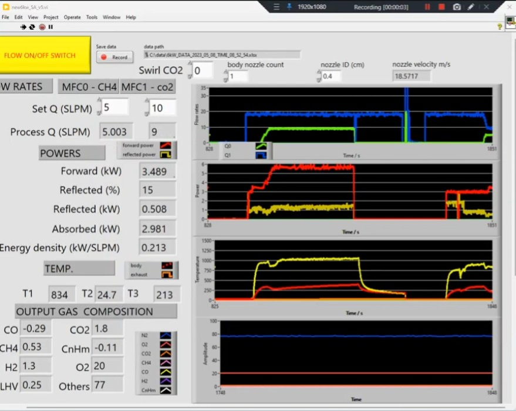
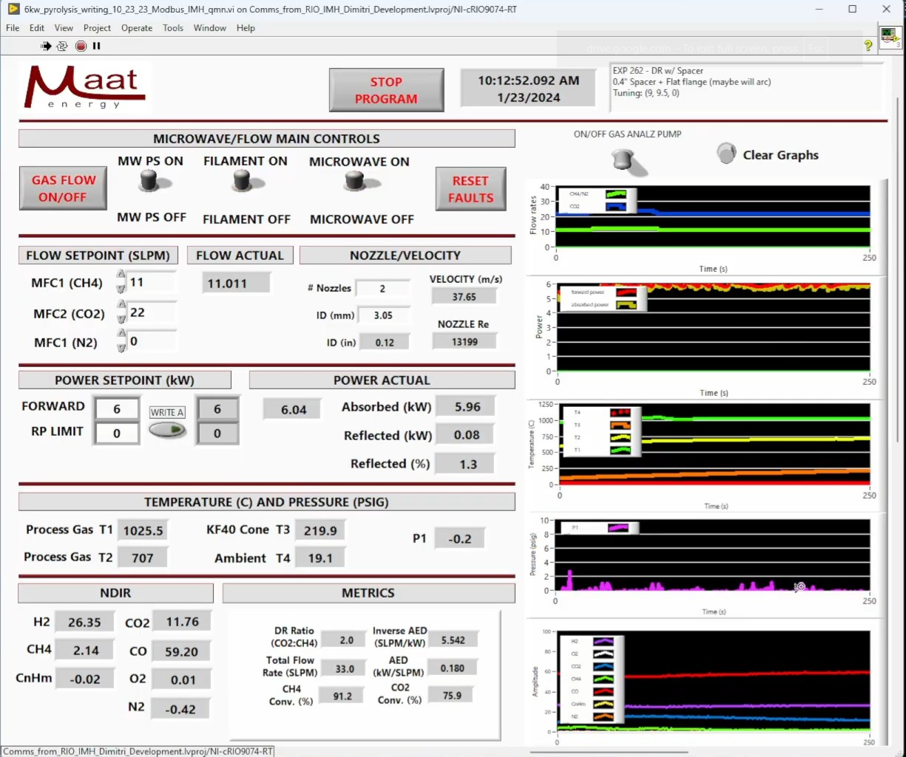
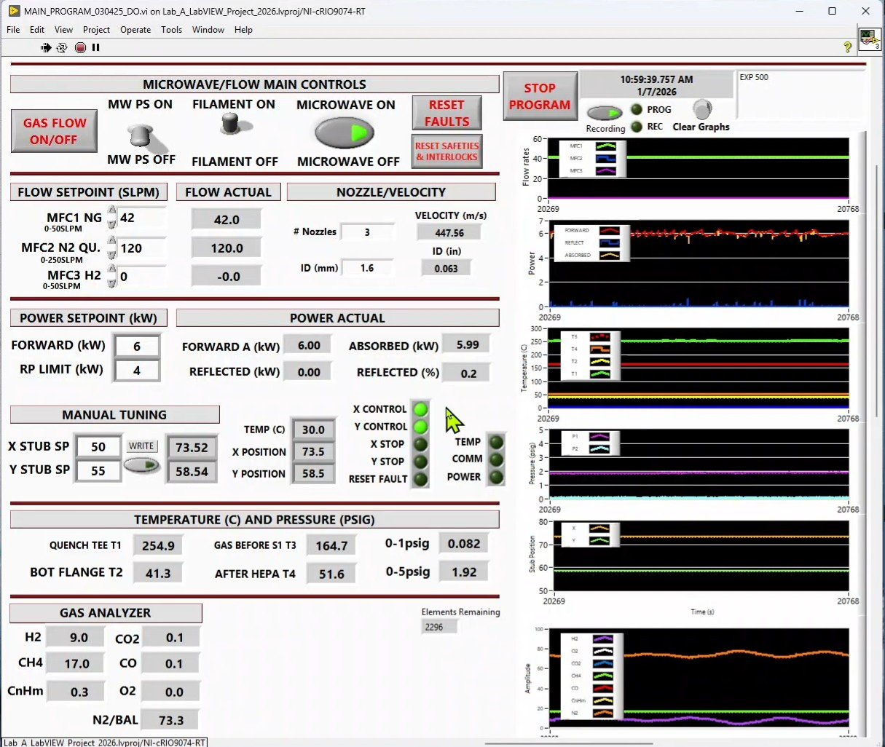

Lab-scale and pilot-scale plasma systems needed reliable real-time control, monitoring, and safety infrastructure.
Approach
Integrated sensors, redesigned the operator front panel, built a process display for visitors, and developed a safety interlock system with alarm and fault-shutdown logic.
Outcome
Improved operator observability, enabled technology transfer to investors, and reduced monitoring fatigue through automatic fault detection and shutdown.
Front Panel Redesign
Updated the operator interface to improve observability during live operation — clearer layout, better signal grouping, and a dedicated process display for non-technical visitors and investor demonstrations.
Lab-Scale SCADA Front Panel Development



Initial SCADAFunctional copy
HMI ImprovementSplit controls & measurement sectionsColor and organization improvement
Data acquisition / recordingMore sensors/controls integrated
Evolution of the lab-scale SCADA front panel across three development stages.
SCADA Structure
The system is built around an NI cRIO running parallel real-time loops for control, data acquisition, and safety, with a separate industrial PC handling the operator interface and background programs including data recording and process display sync.
Data flow between the industrial PC, NI cRIO, and physical I/O.
Sensor Integration
Added and validated sensors determined to be valuable for experimental data and operational awareness:
Thermocouples and pressure transducers for thermal and process monitoring
Directional couplers for real-time forward and reflected power measurement
Automatic tuner feedback for impedance monitoring
Safety Interlock System
Developed a safety interlock system that compares measured values against configurable alarm and fault setpoints. Alarms alert operators to out-of-range conditions; fault setpoints trigger an automatic shutdown procedure, enabling autonomous operation without continuous manual monitoring.